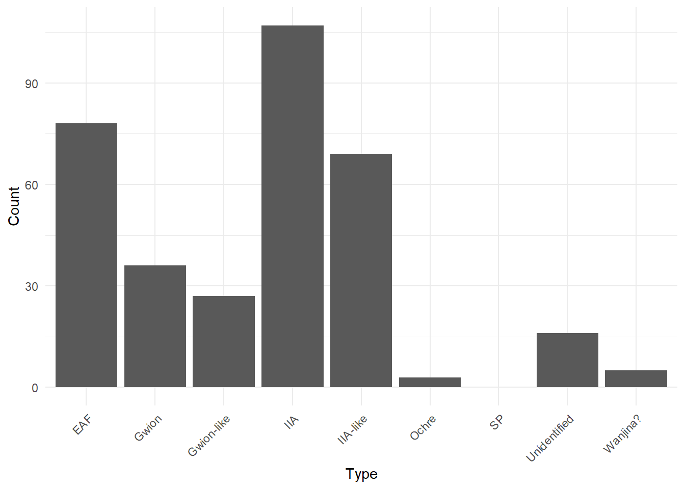
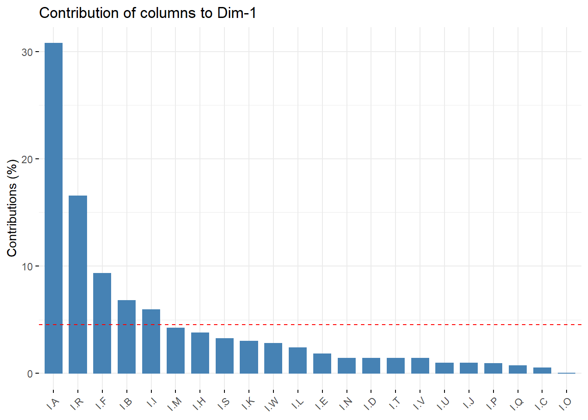
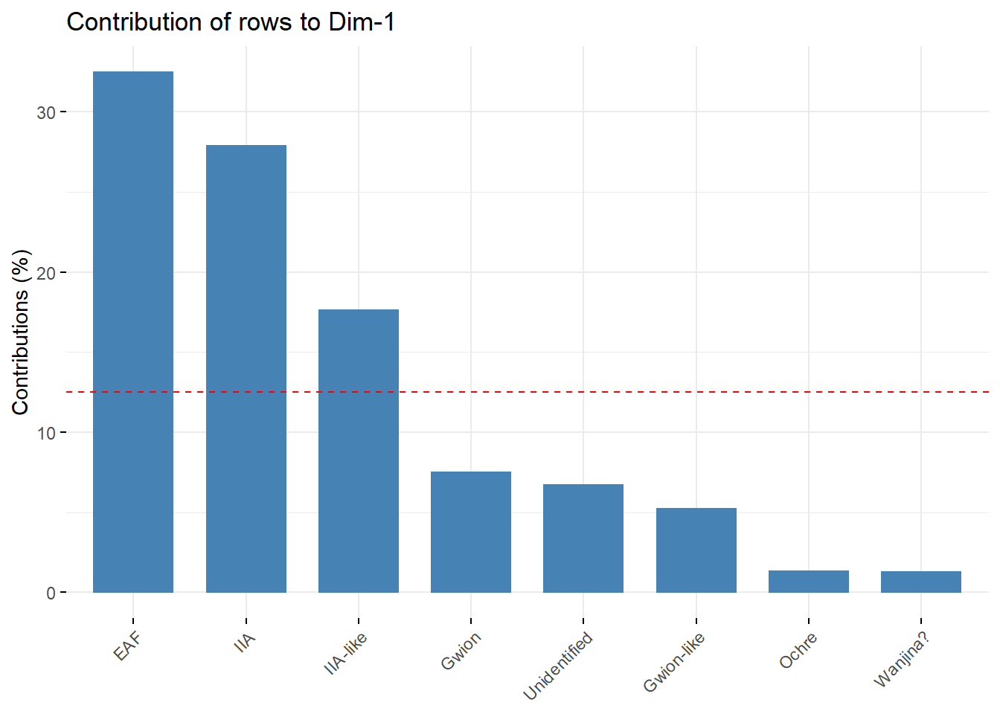

CA
Philipp Bayer
2022-09-13
Last updated: 2022-09-13
Checks: 7 0
Knit directory: rockart_mca_ca/
This reproducible R Markdown analysis was created with workflowr (version 1.7.0). The Checks tab describes the reproducibility checks that were applied when the results were created. The Past versions tab lists the development history.
Great! Since the R Markdown file has been committed to the Git repository, you know the exact version of the code that produced these results.
Great job! The global environment was empty. Objects defined in the global environment can affect the analysis in your R Markdown file in unknown ways. For reproduciblity it’s best to always run the code in an empty environment.
The command set.seed(20220913) was run prior to running
the code in the R Markdown file. Setting a seed ensures that any results
that rely on randomness, e.g. subsampling or permutations, are
reproducible.
Great job! Recording the operating system, R version, and package versions is critical for reproducibility.
Nice! There were no cached chunks for this analysis, so you can be confident that you successfully produced the results during this run.
Great job! Using relative paths to the files within your workflowr project makes it easier to run your code on other machines.
Great! You are using Git for version control. Tracking code development and connecting the code version to the results is critical for reproducibility.
The results in this page were generated with repository version 886692f. See the Past versions tab to see a history of the changes made to the R Markdown and HTML files.
Note that you need to be careful to ensure that all relevant files for
the analysis have been committed to Git prior to generating the results
(you can use wflow_publish or
wflow_git_commit). workflowr only checks the R Markdown
file, but you know if there are other scripts or data files that it
depends on. Below is the status of the Git repository when the results
were generated:
Ignored files:
Ignored: .Rhistory
Ignored: .Rproj.user/
Untracked files:
Untracked: data/MCA_Macropods_Data.xlsx
Untracked: data/~$MCA_Macropods_Data.xlsx
Unstaged changes:
Modified: analysis/about.Rmd
Modified: analysis/index.Rmd
Note that any generated files, e.g. HTML, png, CSS, etc., are not included in this status report because it is ok for generated content to have uncommitted changes.
These are the previous versions of the repository in which changes were
made to the R Markdown (analysis/CA.Rmd) and HTML
(docs/CA.html) files. If you’ve configured a remote Git
repository (see ?wflow_git_remote), click on the hyperlinks
in the table below to view the files as they were in that past version.
| File | Version | Author | Date | Message |
|---|---|---|---|---|
| Rmd | 886692f | Philipp Bayer | 2022-09-13 | wflow_publish("./analysis/CA.Rmd") |
Introduction
Here, we run through a standard CA. The code is mostly based on https://rentzb.github.io/post/ca/ using the FactoMineR package.
library(tidyverse)── Attaching packages ─────────────────────────────────────── tidyverse 1.3.1 ──✔ ggplot2 3.3.6 ✔ purrr 0.3.4
✔ tibble 3.1.7 ✔ dplyr 1.0.9
✔ tidyr 1.2.0 ✔ stringr 1.4.0
✔ readr 2.1.2 ✔ forcats 0.5.1── Conflicts ────────────────────────────────────────── tidyverse_conflicts() ──
✖ dplyr::filter() masks stats::filter()
✖ dplyr::lag() masks stats::lag()library(FactoMineR)Warning: package 'FactoMineR' was built under R version 4.2.1library(factoextra)Warning: package 'factoextra' was built under R version 4.2.1Welcome! Want to learn more? See two factoextra-related books at https://goo.gl/ve3WBa#install.packages(c('factoextra', 'FactoMineR'))For CA we need to make a contingency table, the number of responses/possible values for each level for each variable (column).
Let’s do that!
df <- readxl::read_xlsx('./data/MCA_Macropods_Data.xlsx', sheet = 'Macropods_Complete ind')
head(df)# A tibble: 6 × 9
Style Condition `Arm Curvature` `Arm Shape` `Leg Curvature` `Leg Shape`
<chr> <chr> <chr> <chr> <chr> <chr>
1 Gwion C M-AC-B M-AS-B M-LC-B M-LS-B
2 IIA P M-AC-C M-AS-C M-LC-C M-LS-C
3 IIA P M-AC-D M-AS-D M-LC-B M-LS-D
4 IIA C M-AC-B M-AS-C M-LC-C M-LS-B
5 IIA C M-AC-C M-AS-E M-LC-C M-LS-E
6 EAF C M-AC-C M-AS-D M-LC-D M-LS-D
# … with 3 more variables: `Tail Curvature` <chr>, `Tail Shape` <chr>,
# Infill <chr>contingency <- df %>% gather(key=styles, value=values)
contingency$styles <- as.factor(contingency$styles)
contingency$values <- as.factor(contingency$values)
dt <- with(contingency,table(styles,values))
dt values
styles C EAF Gwion Gwion-like I I-A I-B I-C I-D I-E I-F I-H I-I
Arm Curvature 0 0 0 0 0 0 0 0 0 0 0 0 0
Arm Shape 0 0 0 0 0 0 0 0 0 0 0 0 0
Condition 114 0 0 0 11 0 0 0 0 0 0 0 0
Infill 0 0 0 0 0 51 24 16 3 1 17 5 12
Leg Curvature 0 0 0 0 0 0 0 0 0 0 0 0 0
Leg Shape 0 0 0 0 0 0 0 0 0 0 0 0 0
Style 0 58 30 22 0 0 0 0 0 0 0 0 0
Tail Curvature 0 0 0 0 0 0 0 0 0 0 0 0 0
Tail Shape 0 0 0 0 0 0 0 0 0 0 0 0 0
values
styles I-J I-K I-L I-M I-N I-O I-P I-Q I-R I-S I-T I-U I-V I-W IIA
Arm Curvature 0 0 0 0 0 0 0 0 0 0 0 0 0 0 0
Arm Shape 0 0 0 0 0 0 0 0 0 0 0 0 0 0 0
Condition 0 0 0 0 0 0 0 0 0 0 0 0 0 0 0
Infill 2 17 3 7 3 2 4 13 29 3 3 2 1 5 0
Leg Curvature 0 0 0 0 0 0 0 0 0 0 0 0 0 0 0
Leg Shape 0 0 0 0 0 0 0 0 0 0 0 0 0 0 0
Style 0 0 0 0 0 0 0 0 0 0 0 0 0 0 72
Tail Curvature 0 0 0 0 0 0 0 0 0 0 0 0 0 0 0
Tail Shape 0 0 0 0 0 0 0 0 0 0 0 0 0 0 0
values
styles IIA-like M-AC-B M-AC-C M-AC-D M-AC-E M-AC-F M-AC-G M-AC-H
Arm Curvature 0 27 79 3 33 19 32 3
Arm Shape 0 0 0 0 0 0 0 0
Condition 0 0 0 0 0 0 0 0
Infill 0 0 0 0 0 0 0 0
Leg Curvature 0 0 0 0 0 0 0 0
Leg Shape 0 0 0 0 0 0 0 0
Style 41 0 0 0 0 0 0 0
Tail Curvature 0 0 0 0 0 0 0 0
Tail Shape 0 0 0 0 0 0 0 0
values
styles M-AC-I M-AC-J M-AC-K M-AC-L M-AS-A M-AS-B M-AS-C M-AS-D M-AS-E
Arm Curvature 1 3 18 5 0 0 0 0 0
Arm Shape 0 0 0 0 1 73 31 59 8
Condition 0 0 0 0 0 0 0 0 0
Infill 0 0 0 0 0 0 0 0 0
Leg Curvature 0 0 0 0 0 0 0 0 0
Leg Shape 0 0 0 0 0 0 0 0 0
Style 0 0 0 0 0 0 0 0 0
Tail Curvature 0 0 0 0 0 0 0 0 0
Tail Shape 0 0 0 0 0 0 0 0 0
values
styles M-AS-F M-AS-G M-AS-H M-AS-I M-LC-A M-LC-B M-LC-C M-LC-D M-LC-E
Arm Curvature 0 0 0 0 0 0 0 0 0
Arm Shape 20 4 25 2 0 0 0 0 0
Condition 0 0 0 0 0 0 0 0 0
Infill 0 0 0 0 0 0 0 0 0
Leg Curvature 0 0 0 0 20 41 26 11 15
Leg Shape 0 0 0 0 0 0 0 0 0
Style 0 0 0 0 0 0 0 0 0
Tail Curvature 0 0 0 0 0 0 0 0 0
Tail Shape 0 0 0 0 0 0 0 0 0
values
styles M-LC-F M-LC-G M-LC-H M-LC-I M-LC-J M-LC-K M-LS-A M-LS-B M-LS-C
Arm Curvature 0 0 0 0 0 0 0 0 0
Arm Shape 0 0 0 0 0 0 0 0 0
Condition 0 0 0 0 0 0 0 0 0
Infill 0 0 0 0 0 0 0 0 0
Leg Curvature 18 6 72 5 7 2 0 0 0
Leg Shape 0 0 0 0 0 0 24 33 27
Style 0 0 0 0 0 0 0 0 0
Tail Curvature 0 0 0 0 0 0 0 0 0
Tail Shape 0 0 0 0 0 0 0 0 0
values
styles M-LS-D M-LS-E M-LS-F M-LS-G M-LS-H M-LS-I M-TC-A M-TC-B M-TC-C
Arm Curvature 0 0 0 0 0 0 0 0 0
Arm Shape 0 0 0 0 0 0 0 0 0
Condition 0 0 0 0 0 0 0 0 0
Infill 0 0 0 0 0 0 0 0 0
Leg Curvature 0 0 0 0 0 0 0 0 0
Leg Shape 110 1 5 9 2 12 0 0 0
Style 0 0 0 0 0 0 0 0 0
Tail Curvature 0 0 0 0 0 0 24 36 7
Tail Shape 0 0 0 0 0 0 0 0 0
values
styles M-TC-D M-TC-E M-TC-F M-TC-G M-TC-H M-TC-I M-TC-J M-TC-K M-TC-L
Arm Curvature 0 0 0 0 0 0 0 0 0
Arm Shape 0 0 0 0 0 0 0 0 0
Condition 0 0 0 0 0 0 0 0 0
Infill 0 0 0 0 0 0 0 0 0
Leg Curvature 0 0 0 0 0 0 0 0 0
Leg Shape 0 0 0 0 0 0 0 0 0
Style 0 0 0 0 0 0 0 0 0
Tail Curvature 47 25 8 18 19 12 4 15 4
Tail Shape 0 0 0 0 0 0 0 0 0
values
styles M-TC-M M-TS-A M-TS-B M-TS-C M-TS-D M-TS-E M-TS-F M-TS-G M-TS-H
Arm Curvature 0 0 0 0 0 0 0 0 0
Arm Shape 0 0 0 0 0 0 0 0 0
Condition 0 0 0 0 0 0 0 0 0
Infill 0 0 0 0 0 0 0 0 0
Leg Curvature 0 0 0 0 0 0 0 0 0
Leg Shape 0 0 0 0 0 0 0 0 0
Style 0 0 0 0 0 0 0 0 0
Tail Curvature 4 0 0 0 0 0 0 0 0
Tail Shape 0 26 24 38 116 3 4 9 1
values
styles M-TS-I P
Arm Curvature 0 0
Arm Shape 0 0
Condition 0 98
Infill 0 0
Leg Curvature 0 0
Leg Shape 0 0
Style 0 0
Tail Curvature 0 0
Tail Shape 2 0contingency %>% ggplot(aes(x=values, fill=styles)) + geom_bar()Running the CA
domains.CA <- CA(dt, graph=F)fviz_ca_biplot(domains.CA,repel=T)Warning: ggrepel: 87 unlabeled data points (too many overlaps). Consider
increasing max.overlaps
fviz_ca_biplot(domains.CA,repel=T,map="rowprincipal")Warning: ggrepel: 87 unlabeled data points (too many overlaps). Consider
increasing max.overlaps
fviz_ca_biplot(domains.CA,repel=T,map="colprincipal")Warning: ggrepel: 87 unlabeled data points (too many overlaps). Consider
increasing max.overlapsfviz_screeplot(domains.CA,addlabels=T) +
geom_hline(yintercept=14.3,linetype=2,color="red")
What contributes to axis 1? By column:
fviz_contrib(domains.CA, choice="col",axes=1)
By row:
fviz_contrib(domains.CA, choice="row",axes=1)
What contributes to axis 2?
fviz_contrib(domains.CA, choice="col",axes=2)
fviz_contrib(domains.CA, choice="row",axes=2)
Quality of fit
cos = 1, good representation.
fviz_ca_row(domains.CA, col.row = "cos2",
gradient.cols = c("#00AFBB", "#E7B800", "#FC4E07"),
repel = TRUE)
fviz_ca_col(domains.CA, col.col = "cos2",
gradient.cols = c("#00AFBB", "#E7B800", "#FC4E07"),
repel = TRUE)Warning: ggrepel: 87 unlabeled data points (too many overlaps). Consider
increasing max.overlaps
sessionInfo()R version 4.2.0 (2022-04-22 ucrt)
Platform: x86_64-w64-mingw32/x64 (64-bit)
Running under: Windows 10 x64 (build 19044)
Matrix products: default
locale:
[1] LC_COLLATE=English_Australia.utf8 LC_CTYPE=English_Australia.utf8
[3] LC_MONETARY=English_Australia.utf8 LC_NUMERIC=C
[5] LC_TIME=English_Australia.utf8
attached base packages:
[1] stats graphics grDevices utils datasets methods base
other attached packages:
[1] factoextra_1.0.7 FactoMineR_2.6 forcats_0.5.1 stringr_1.4.0
[5] dplyr_1.0.9 purrr_0.3.4 readr_2.1.2 tidyr_1.2.0
[9] tibble_3.1.7 ggplot2_3.3.6 tidyverse_1.3.1 workflowr_1.7.0
loaded via a namespace (and not attached):
[1] fs_1.5.2 lubridate_1.8.0 httr_1.4.3
[4] rprojroot_2.0.3 tools_4.2.0 backports_1.4.1
[7] bslib_0.3.1 utf8_1.2.2 R6_2.5.1
[10] DT_0.23 DBI_1.1.2 colorspace_2.0-3
[13] withr_2.5.0 tidyselect_1.1.2 processx_3.5.3
[16] emmeans_1.7.5 compiler_4.2.0 git2r_0.30.1
[19] cli_3.3.0 rvest_1.0.2 flashClust_1.01-2
[22] xml2_1.3.3 labeling_0.4.2 sass_0.4.1
[25] scales_1.2.0 mvtnorm_1.1-3 callr_3.7.0
[28] multcompView_0.1-8 digest_0.6.29 rmarkdown_2.14
[31] pkgconfig_2.0.3 htmltools_0.5.2 highr_0.9
[34] dbplyr_2.1.1 fastmap_1.1.0 htmlwidgets_1.5.4
[37] rlang_1.0.2 readxl_1.4.0 rstudioapi_0.13
[40] farver_2.1.0 jquerylib_0.1.4 generics_0.1.2
[43] jsonlite_1.8.0 car_3.1-0 magrittr_2.0.3
[46] leaps_3.1 Rcpp_1.0.8.3 munsell_0.5.0
[49] fansi_1.0.3 abind_1.4-5 lifecycle_1.0.1
[52] scatterplot3d_0.3-42 stringi_1.7.6 whisker_0.4
[55] yaml_2.3.5 carData_3.0-5 MASS_7.3-57
[58] grid_4.2.0 promises_1.2.0.1 ggrepel_0.9.1
[61] crayon_1.5.1 lattice_0.20-45 haven_2.5.0
[64] hms_1.1.1 knitr_1.39 ps_1.7.0
[67] pillar_1.7.0 ggpubr_0.4.0 ggsignif_0.6.3
[70] estimability_1.4 reprex_2.0.1 glue_1.6.2
[73] evaluate_0.15 getPass_0.2-2 modelr_0.1.8
[76] vctrs_0.4.1 tzdb_0.3.0 httpuv_1.6.5
[79] cellranger_1.1.0 gtable_0.3.0 assertthat_0.2.1
[82] xfun_0.31 xtable_1.8-4 broom_0.8.0
[85] rstatix_0.7.0 coda_0.19-4 later_1.3.0
[88] cluster_2.1.3 ellipsis_0.3.2